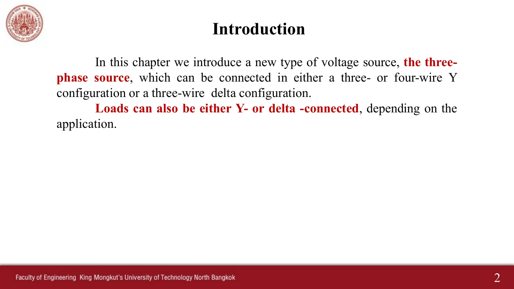
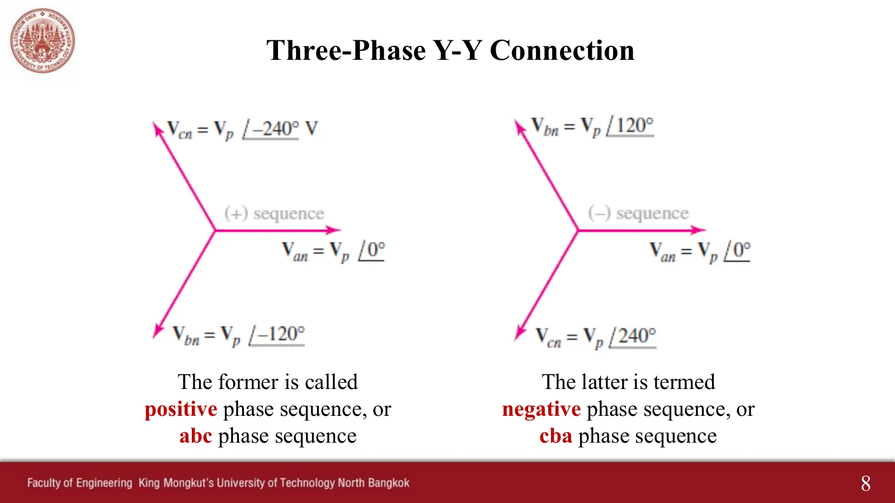
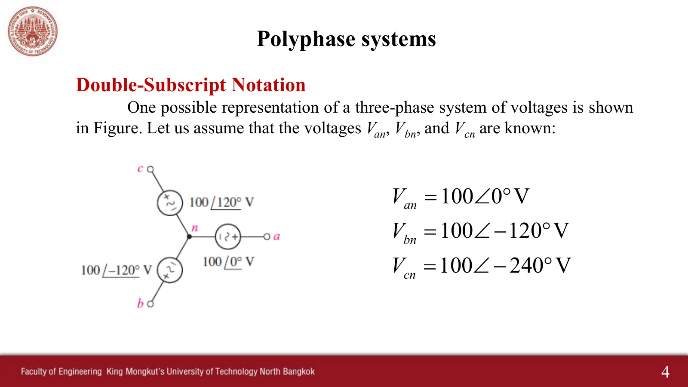

แหล่งจ่ายสามเฟส Three-phase sources — phase sequence, double subscripts and line voltages
Three-phase sources Phase sequence, double subscripts and line voltages
ไฟฟ้าที่การไฟฟ้าผลิตและส่งมาเป็นระบบสามเฟส (สไลด์หน้า 2–3): เครื่องกำเนิดไฟฟ้ามีขดลวดสามชุดวางห่างกัน 120° รอบแม่เหล็กที่หมุน จึงได้แรงดันสามตัวขนาดเท่ากันแต่ห่างกันหนึ่งในสามของรอบ แหล่งจ่ายและโหลดต่อได้ทั้งแบบวาย (Y) และแบบเดลตา (Δ) ระบบสามเฟสได้เปรียบทั้งด้านเครื่องจักรกลที่หมุนและด้านการส่งกำลัง (หน้า 9.2 จะแสดงว่ากำลังรวมขณะใด ๆ คงที่) ตลอดบทนี้ทุกค่าเป็นค่ายังผล (effective หรือ root mean square, rms) ตามที่สไลด์หน้า 7 นิยาม \(V_p\) และ Hayt เขียนไว้ในเชิงอรรถของบทที่ 12 ส่วนชื่อจุดใช้ตามที่ผู้สอนจดไว้: ฝั่งแหล่งจ่ายใช้ตัวพิมพ์เล็ก a, b, c, n และฝั่งโหลดใช้ตัวพิมพ์ใหญ่ A, B, C, N หน้านี้มีภาพจำลองเครื่องกำเนิดไฟฟ้าและลำดับเฟส (ส่วน A) โจทย์สไลด์หน้า 4–5 (ข้อ 1) แรงดันเฟสและแรงดันสายของแหล่งจ่ายวาย (ส่วน B) และโจทย์ที่ผู้สอนทำในห้องอีกสองข้อ (ข้อ 2–3)
The power a utility generates and delivers is three-phase (slides pp. 2–3): a generator has three coils placed 120° apart around a turning magnet, so it produces three voltages of equal size, one third of a cycle apart. Sources and loads may be connected in Y or in delta (Δ). Three-phase systems have advantages in rotating machinery and in transmission (page 9.2 shows that the total instantaneous power is constant). Throughout this chapter every value is an effective (root mean square, rms) value, as slide p. 7 defines \(V_p\) and as Hayt states in a footnote to chapter 12. Point names follow the instructor's note: lower-case a, b, c, n at the source and upper-case A, B, C, N at the load. This page has a simulation of the generator and the phase sequence (section A), the problem of slides pp. 4–5 (problem 1), the phase and line voltages of a Y source (section B), and two more problems the instructor worked in class (problems 2–3).
ประเด็นสำคัญของหน้านี้
- แหล่งจ่ายสามเฟสสมดุล (balanced): แรงดันเฟส (phase voltage, แรงดันระหว่างสายกับนิวทรัล) สามตัวขนาดเท่ากัน \(V_p\) ห่างกัน 120° จึงรวมกันได้ศูนย์ \(\mathbf{V}_{an} + \mathbf{V}_{bn} + \mathbf{V}_{cn} = 0\) ทุกขณะ (สไลด์หน้า 6)
- ลำดับเฟสบวก (positive sequence หรือ abc): \(\mathbf{V}_{bn} = V_p\angle{-120^\circ}\), \(\mathbf{V}_{cn} = V_p\angle{-240^\circ}\) · ลำดับเฟสลบ (negative หรือ cba): \(V_p\angle 120^\circ\), \(V_p\angle 240^\circ\) (สไลด์หน้า 8) สลับสายคู่ใดคู่หนึ่งก็กลับลำดับได้
- สัญกรณ์ตัวห้อยคู่ (double-subscript notation): \(\mathbf{V}_{ab}\) คือแรงดันของจุด a เทียบกับจุด b (ขั้ว + ที่ a) จึงเขียนกฎแรงดันของเคียร์ชอฟฟ์ (Kirchhoff's voltage law, KVL) ได้โดยไม่ต้องดูรูป: \(\mathbf{V}_{ab} = \mathbf{V}_{an} + \mathbf{V}_{nb} = \mathbf{V}_{an} - \mathbf{V}_{bn}\)
- แรงดันสาย (line voltage, ระหว่างสายสองเส้น) \(V_L = \sqrt3\,V_p\) · ลำดับบวก \(\mathbf{V}_{ab}\) นำหน้า \(\mathbf{V}_{an}\) อยู่ 30° · ลำดับลบตามหลัง 30° · คิดจากผลต่างของแรงดันเฟสเสมอ แล้วจะไม่ผิดไม่ว่าลำดับใดหรือ \(\mathbf{V}_{an}\) อยู่ที่มุมใด
- ทุกค่าเป็นค่ายังผล: ไฟบ้าน 220–230 V คือ \(V_p\) และไฟสามเฟส 380–400 V คือ \(V_L \approx \sqrt3 \times 220\) ค่ายอดของ 220 V คือ \(220\sqrt2 = 311.1\) V
Key points of this page
- Balanced three-phase source: three phase voltages (line to neutral) of equal size \(V_p\), 120° apart, so they add to zero, \(\mathbf{V}_{an} + \mathbf{V}_{bn} + \mathbf{V}_{cn} = 0\), at every instant (slide p. 6).
- Positive sequence (abc): \(\mathbf{V}_{bn} = V_p\angle{-120^\circ}\), \(\mathbf{V}_{cn} = V_p\angle{-240^\circ}\) · negative sequence (cba): \(V_p\angle 120^\circ\), \(V_p\angle 240^\circ\) (slide p. 8). Swapping any two lines reverses the sequence.
- Double-subscript notation: \(\mathbf{V}_{ab}\) is the voltage of point a with respect to point b (+ at a), so Kirchhoff's voltage law (KVL) can be written without looking at the figure: \(\mathbf{V}_{ab} = \mathbf{V}_{an} + \mathbf{V}_{nb} = \mathbf{V}_{an} - \mathbf{V}_{bn}\).
- Line voltage (between two lines) \(V_L = \sqrt3\,V_p\) · in positive sequence \(\mathbf{V}_{ab}\) leads \(\mathbf{V}_{an}\) by 30° · in negative sequence it lags by 30° · always work from the difference of phase voltages and you cannot go wrong, whatever the sequence or the angle of \(\mathbf{V}_{an}\).
- Everything is rms: household 220–230 V is \(V_p\), three-phase 380–400 V is \(V_L \approx \sqrt3 \times 220\); the peak of 220 V is \(220\sqrt2 = 311.1\) V.

ดูภาพรวมของบทที่ผู้สอนเขียนในห้อง (สไลด์ปี 2560)See the chapter overview the instructor wrote in class (2017 slides)
เครื่องกำเนิดไฟฟ้าสามเฟสและลำดับเฟส
The three-phase generator and phase sequence


แม่เหล็กหมุนผ่านขดลวด a, b, c ซึ่งวางห่างกัน 120° ขดลวดจะสว่างเมื่อขั้วเหนือหันเข้าหา (แรงดันของมันใกล้ค่ายอด) ข้าง ๆ คือเฟเซอร์ทั้งสามที่หมุนไปพร้อมกัน เงาบนแกนจินตภาพคือค่าขณะนั้นในกราฟด้านล่าง (อ้างอิงฟังก์ชันไซน์ ค่ายอด \(V_p\sqrt2\)) ลำดับเฟสบวก: ยอดของ a มาก่อน แล้ว b แล้ว c เหมือนกราฟในสไลด์หน้า 3 กด "ลำดับลบ" แม่เหล็กหมุนกลับ ยอดจึงมาเรียง a, c, b (สไลด์หน้า 8 ภาพขวา) กด "ผลรวม" เพื่อดูว่าเฟเซอร์สามตัวต่อหัวต่อหางแล้วปิดพอดี และ \(v_{an} + v_{bn} + v_{cn} = 0\) ทุกขณะ
A magnet turns past the coils a, b, c, placed 120° apart; a coil lights up when the north pole faces it (its voltage is near its peak). Beside it are the three phasors turning together; their shadows on the imaginary axis are the instantaneous values in the graph below (sine reference, peak \(V_p\sqrt2\)). Positive sequence: a peaks first, then b, then c, as in the graph of slide p. 3. Press "negative": the magnet turns the other way and the peaks come a, c, b (slide p. 8, right). Press "Sum" to see the three phasors close head to tail and \(v_{an} + v_{bn} + v_{cn} = 0\) at every instant.
ดูสไลด์หน้า 3 ที่ผู้สอนเขียนในห้อง (ปี 2560)See slide p. 3 as written in class (2017)
หาแรงดันสาย \(\mathbf{V}_{ab}\) ของแหล่งจ่ายสามเฟสในรูป
Find the line voltage \(\mathbf{V}_{ab}\) of the three-phase source in the figure

ภาพจำลองต่อโวลต์มิเตอร์สองตัวเข้ากับแหล่งจ่าย ตัวบนวัดระหว่างสาย a กับ b (แรงดันสาย) ตัวล่างวัดระหว่างสาย b กับนิวทรัล (แรงดันเฟส) ลองตอบก่อน แล้วเปิดเฉลยทีละขั้น: ระนาบสร้าง \(\mathbf{V}_{ab} = \mathbf{V}_{an} + (-\mathbf{V}_{bn})\) แบบหัวต่อหาง (เส้นประคือ \(-\mathbf{V}_{bn}\)) และขั้นสุดท้ายแสดงแรงดันสายครบสามตัวกับมุม 30° กราฟแสดงว่ายอดของ \(v_{ab}\) สูงกว่ายอดของแรงดันเฟส \(\sqrt3\) เท่า
The simulation connects two voltmeters to the source: the upper one reads between lines a and b (a line voltage), the lower one between line b and the neutral (a phase voltage). Try it first, then open the solution step by step: the plane builds \(\mathbf{V}_{ab} = \mathbf{V}_{an} + (-\mathbf{V}_{bn})\) head to tail (dashed: \(-\mathbf{V}_{bn}\)), and the last step shows all three line voltages with the 30°. The graph shows the peak of \(v_{ab}\) \(\sqrt3\) times higher than that of a phase voltage.
ดูสไลด์หน้า 5 (เฉลยในสไลด์) และสิ่งที่ผู้สอนเขียนในห้อง (ปี 2560)See slide p. 5 (the slide's own solution) and what the instructor wrote in class (2017)
แหล่งจ่ายวาย: แรงดันเฟสและแรงดันสาย
The Y source: phase voltages and line voltages
วงจรคือแหล่งจ่ายต่อแบบวายของสไลด์หน้า 6 มีขั้วสาย A, B, C และขั้วนิวทรัล N โวลต์มิเตอร์ตัวบนอ่านแรงดันสาย ตัวล่างอ่านแรงดันเฟส ได้อัตราส่วน \(\sqrt3\) พอดีเสมอ เลือกแรงดันสายที่จะสร้าง แล้วระนาบจะต่อ \(\mathbf{V}_{xy} = \mathbf{V}_{xn} + (-\mathbf{V}_{yn})\) แบบหัวต่อหางเหมือนรูปในสไลด์หน้า 9 ลองสลับลำดับเฟส: ขนาดเท่าเดิม แต่แรงดันสายย้ายจากนำหน้า 30° เป็นตามหลัง 30° ลองหมุนมุมของ \(\mathbf{V}_{an}\): ทุกตัวหมุนตาม สูตรในสไลด์หน้า 9 จึงไม่ตรงอีกต่อไป แต่ผลต่างของแรงดันเฟสใต้แผงควบคุมยังถูกเสมอ
The circuit is the Y source of slide p. 6 with line terminals A, B, C and the neutral terminal N. The upper voltmeter reads a line voltage and the lower one a phase voltage; their ratio is always exactly \(\sqrt3\). Choose the line voltage to build, and the plane joins \(\mathbf{V}_{xy} = \mathbf{V}_{xn} + (-\mathbf{V}_{yn})\) head to tail, as in the figure of slide p. 9. Switch the sequence: the size stays, but the line voltage moves from 30° ahead to 30° behind. Turn the angle of \(\mathbf{V}_{an}\): everything turns with it, so the slide p. 9 formulas no longer match, while the difference of phase voltages under the controls is always right.
ดูสไลด์หน้า 7 และ 9 ที่ผู้สอนเขียนในห้อง (ปี 2560)See slides pp. 7 and 9 as written in class (2017)
ลำดับเฟสลบ \(\mathbf{V}_{an} = 120\angle 0^\circ\) V จงหา \(\mathbf{V}_{ab}\), \(\mathbf{V}_{bc}\) และ \(\mathbf{V}_{ca}\)
Negative sequence with \(\mathbf{V}_{an} = 120\angle 0^\circ\) V: find \(\mathbf{V}_{ab}\), \(\mathbf{V}_{bc}\) and \(\mathbf{V}_{ca}\)
ข้อนี้กลับลำดับเฟส \(\mathbf{V}_{bn}\) จึงนำหน้า \(\mathbf{V}_{an}\) อยู่ 120° ภาพจำลองสร้างแรงดันสายทีละตัวตามขั้น สังเกตว่าแต่ละตัวตามหลังแรงดันเฟสตัวแรกของมัน 30° ตรงข้ามกับข้อ 1 ลองตอบ \(\mathbf{V}_{bc}\) ก่อน
This problem reverses the sequence, so \(\mathbf{V}_{bn}\) leads \(\mathbf{V}_{an}\) by 120°. The simulation builds the line voltages one by one with the steps: each one lags its first phase voltage by 30°, the opposite of problem 1. Try \(\mathbf{V}_{bc}\) first.
ดูวิธีทำที่ผู้สอนเขียนในห้อง (ปี 2560)See the solution written in class (2017)
ลำดับเฟสบวก \(\mathbf{V}_{an} = 10\angle 30^\circ\) V จงหา \(\mathbf{V}_{bn}\), \(\mathbf{V}_{cn}\) และแรงดันสายทั้งสาม
Positive sequence with \(\mathbf{V}_{an} = 10\angle 30^\circ\) V: find \(\mathbf{V}_{bn}\), \(\mathbf{V}_{cn}\) and the three line voltages
\(\mathbf{V}_{an}\) ไม่ได้อยู่ที่ 0° สูตร \(\sqrt3V_p\angle 30^\circ\) ของสไลด์หน้า 9 จึงใช้ตรง ๆ ไม่ได้ ต้องหมุนทุกตัวตาม \(\mathbf{V}_{an}\) หรือคิดจากผลต่างของแรงดันเฟส ลองตอบ \(\mathbf{V}_{ca}\) ก่อน ระวังว่าตัวห้อยตัวแรกคือขั้วบวก
\(\mathbf{V}_{an}\) is not at 0°, so the \(\sqrt3V_p\angle 30^\circ\) formula of slide p. 9 does not apply as written: turn everything with \(\mathbf{V}_{an}\), or work from the difference of phase voltages. Try \(\mathbf{V}_{ca}\) first, and remember that the first subscript is the + terminal.
ดูวิธีทำที่ผู้สอนเขียนในห้อง (ปี 2560)See the solution written in class (2017)
ฝึกเพิ่ม
More practice
ลองทำดู 1 — ลำดับเฟส
- ส่วน A ดูกราฟ: ลำดับบวก ยอดของสีแดง (a) มาก่อน ตามด้วยสีเหลือง (b) แล้วสีฟ้า (c)
- กด "ลำดับลบ": แม่เหล็กหมุนกลับ และยอดมาเรียง a, c, b แทน
- ในมอเตอร์สามเฟส การสลับสายคู่ใดคู่หนึ่งทำให้มอเตอร์หมุนกลับ (ฝึกเพิ่มข้อ 3 คือผลของการสลับสายต่อแรงดันสาย)
ลองทำดู 2 — ผลรวมเป็นศูนย์
- กด "ผลรวม": เฟเซอร์สามตัวต่อหัวต่อหางเป็นสามเหลี่ยมด้านเท่าที่ปิดพอดี
- ในกราฟ ผลรวม \(v_{an} + v_{bn} + v_{cn}\) เป็นเส้นศูนย์ตลอด แม้แต่ละตัวจะสูงถึง 311 V
- คำถาม: ถ้าเฟส c อ่อนลงเหลือ 90 % ผลรวมยังเป็นศูนย์หรือไม่ (กดปุ่ม "เฟส c เหลือ 90 %" เพื่อดู นี่คือระบบไม่สมดุล)
ลองทำดู 3 — แรงดันสาย
- ข้อ 1: มิเตอร์บนอ่าน 173 V (173.2) มิเตอร์ล่างอ่าน 100 V อัตราส่วน \(\sqrt3\) พอดี
- ส่วน B สลับเป็นลำดับลบ: ขนาดเท่าเดิม แต่ \(\mathbf{V}_{ab}\) ย้ายจาก +30° ไปเป็น −30° (ข้อ 2)
- เลือก \(\mathbf{V}_{ca}\): ต้องใช้ \(\mathbf{V}_{cn} - \mathbf{V}_{an}\) ไม่ใช่ \(\mathbf{V}_{an} - \mathbf{V}_{cn}\) ตัวห้อยตัวแรกคือขั้วบวก (ข้อ 3)
Try this 1 — phase sequence
- In section A watch the graph: in positive sequence the red peak (a) comes first, then yellow (b), then blue (c).
- Press "negative": the magnet turns the other way and the peaks come a, c, b instead.
- In a three-phase motor swapping any two lines makes the motor turn the other way (practice question 3 is what the swap does to a line voltage).
Try this 2 — the sum is zero
- Press "Sum": the three phasors, head to tail, form an equilateral triangle that closes exactly.
- In the graph, \(v_{an} + v_{bn} + v_{cn}\) stays on the zero line, although each voltage reaches 311 V.
- Question: if phase c weakens to 90 %, is the sum still zero? (Press "phase c at 90 %" to see; that is an unbalanced system.)
Try this 3 — line voltages
- Problem 1: the upper meter reads 173 V (173.2) and the lower one 100 V, a ratio of exactly \(\sqrt3\).
- In section B switch to negative sequence: the size stays, but \(\mathbf{V}_{ab}\) moves from +30° to −30° (problem 2).
- Choose \(\mathbf{V}_{ca}\): it is \(\mathbf{V}_{cn} - \mathbf{V}_{an}\), not \(\mathbf{V}_{an} - \mathbf{V}_{cn}\); the first subscript is the + terminal (problem 3).